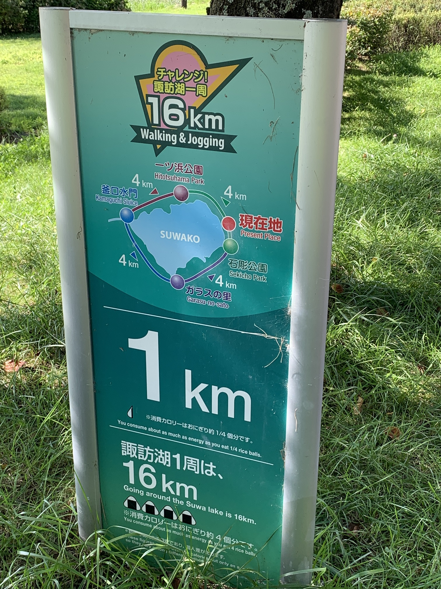
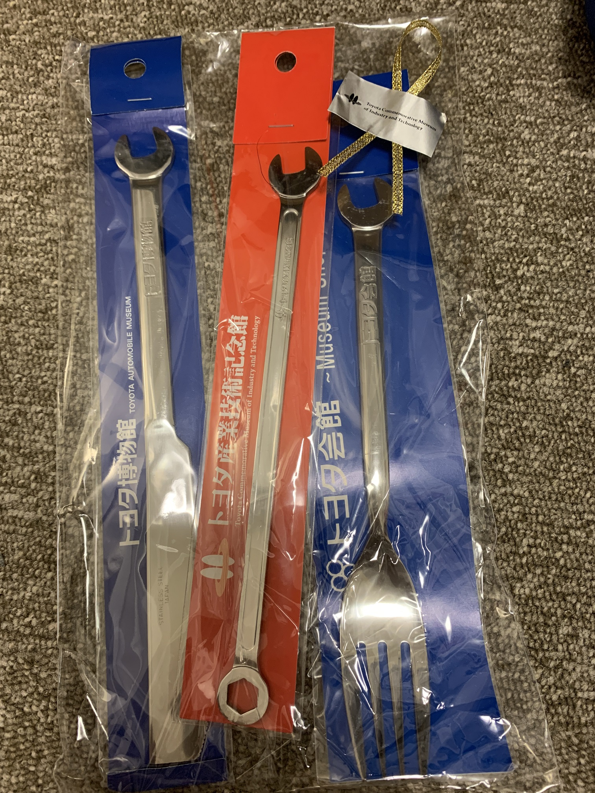
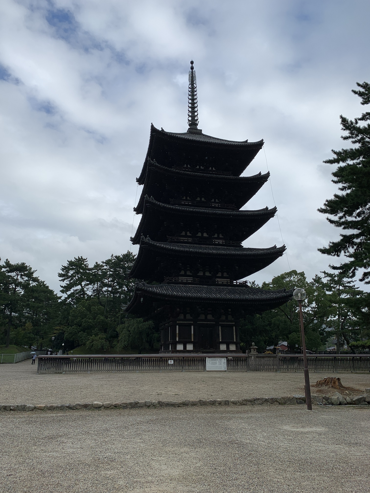
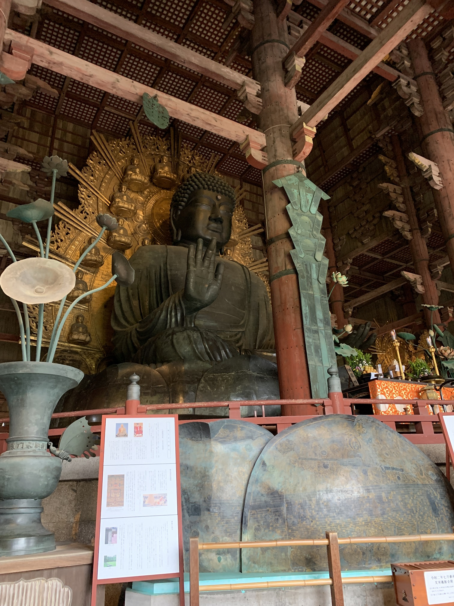
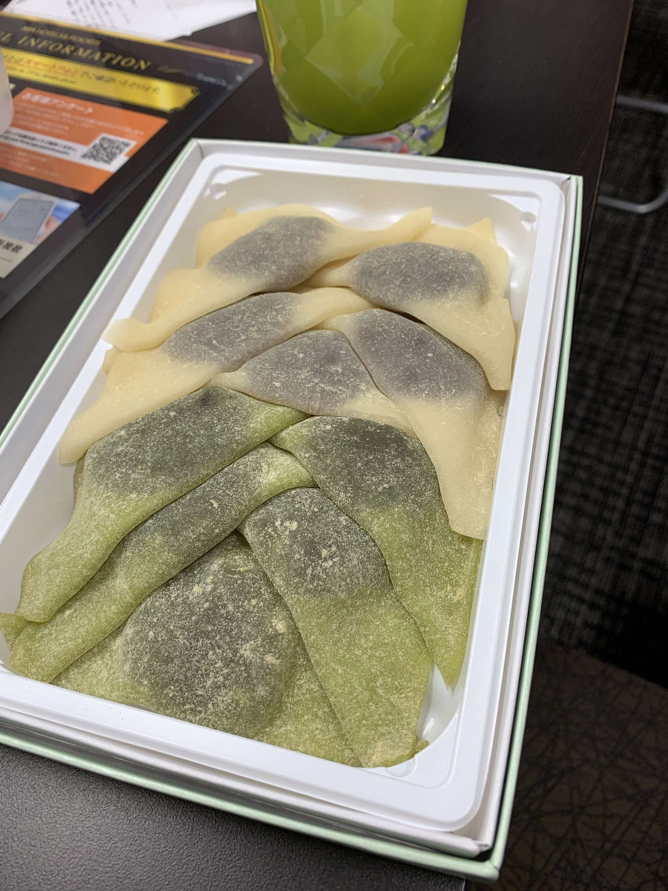
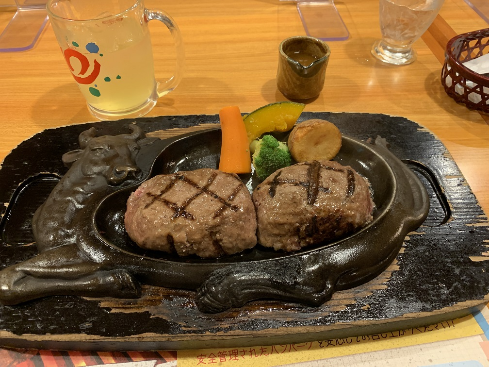
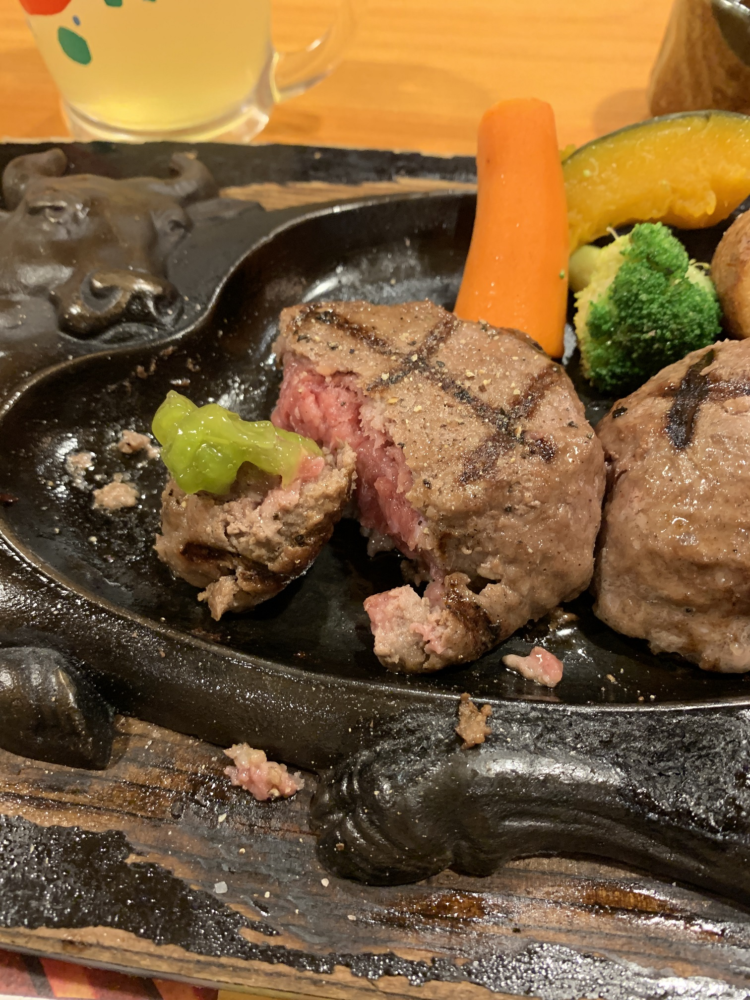

甲府に寄り道した後、諏訪湖畔を歩きました。
始発で出てもゲームセンターが開いていなくて暇になるのでゆっくり出発。
開店まで時間に余裕があるので城跡に行くことにしました。

甲府城跡の上からの景色
 諏訪湖！
諏訪湖！
足湯にも浸かりました
足湯が
— きゅぅ〜〜 (@kyu_099) September 6, 2021
カップル 俺 カップル
🔴🔵 😩 🔴🔵
🌊🌊🌊🌊🌊🌊🌊🌊🌊🌊
になったので退散する
 1周16kmらしい（歩かなかったけど）
諏訪大社下社まで歩いて行き（写真無し）、岡谷のゲームセンターに行った後、岡谷駅から電車に乗り、松本市の快活に行き1日目終了。
駅から見えるデカい橋が良かった。岡谷高架橋（高さ60m）らしい。
始発で出発！
6時30分発車なのでそれまでに芋を詰め込むぞ！
（快活では朝6時から無料のパンとフライドポテトが提供される）20分間で食べられるだけ芋を食べて駅へ移動。長野と岐阜の県境の山を越える路線だけど結構たくさん学生が乗っててびっくりしました。
多治見に到着するとゲムセンに開凸！
 駅前に水場がありました。調布にもこういう場所がほしいですね。
駅前に水場がありました。調布にもこういう場所がほしいですね。
岐阜にはもう用はない（失礼）ので名古屋に移動！
名古屋のゲムセンをでるとオタクがいたので一緒に味噌カツを食べました。
ごっちでぶ
味噌カツ矢場とん名古屋駅エスカ店
その後はオタクと一緒にトヨタ産業技術記念館に行きました。少しくらい時間つぶせたらいいな～くらいの気持ちで行ったら想像よりおもしろくて名古屋を出る電車の時間になっていました。

おみやげのスパナ食器。なぜかオタクに笑われたけど
 みんな大好き歩道橋。
みんな大好き歩道橋。
この後は名古屋に残るオタクと別れ四日市へ。
南四日市駅のゲームセンターに行き関西本線と草津線を使い京都へ。
 関西本線は非電化区間があり直通できないので乗り換え。柘植、読めねえ・・・
関西本線は非電化区間があり直通できないので乗り換え。柘植、読めねえ・・・
柘植から京都までは乗り換えなしでアパホテルに到着し2日目終了。
泊まったアパホテルにコインランドリーが無かったので朝から洗濯に・・・
洗濯前提の量しか服を持ってないのにコインランドリーの無いアパに宿泊してしまう
— きゅぅ〜〜 (@kyu_099) September 18, 2021
1回休み
服を洗濯している間に朝食を食べましょう！
竈炊き立てごはん𡈽井京都駅八条口店（写真無し）
朝食ビュッフェ食べ放題でとても良かった。
朝食を食べ、洗濯も終わり、ゲムセンにも行ったので奈良に行きましょう！この日は移動距離が短いうえに私鉄を使うので18切符は使いません。
 おっ！シカがいます！
おっ！シカがいます！
本当にその辺にシカがいるし、信号も無視してたのでびっくり！
 鹿せんべいの売り場の前でシカが待ち伏せしていて、買った瞬間に尻を噛まれて驚いて地面に落としちゃった
鹿せんべいの売り場の前でシカが待ち伏せしていて、買った瞬間に尻を噛まれて驚いて地面に落としちゃった
噂には聞いていたけど頭突きも噛みつきも容赦ないですね・・・
他の人がシカをひきつけている間なら鹿せんべいを買うことができます。
ところで奈良にはシカだけじゃなくて寺社仏閣もありますね。見に行きましょう！

奈良県でいちばん高い建物らしい。
奈良県で二番目に高い建物らしい。

でっか
昼食は牛まぶしを食べました。
ひつまぶしのように薬味や出汁をかけて味を変えて楽しみます。
牛まぶし三山
 目の前の道をシカが通ったり、店の前に置いてあるメニューをかじったりしてました。
目の前の道をシカが通ったり、店の前に置いてあるメニューをかじったりしてました。

 奈良公園をお散歩。そこら中にシカがいました。
山も登りがいがあるのでバカのオタクとの苦行も楽しめそう。
奈良公園をお散歩。そこら中にシカがいました。
山も登りがいがあるのでバカのオタクとの苦行も楽しめそう。
奈良公園を一周した後は一瞬だけ大阪のゲムセンへ。
奈良に戻って柿の葉寿司を買って帰ろうとしたけどすべて閉店後で買えず・・・ もしかして奈良の人めっちゃ早く寝てます？
仕方がないので京都駅で生八つ橋だけ購入・・・

鰻食べたい！さわやか行きたい！浜松行くぞ！！！
始発で京都を出ます。
昼に浜松に着けばいいので豊橋に路面電車があるのを見つけて寄り道。
 路面電車がある街っていいですよね。
路面電車がある街っていいですよね。
豊橋公園と吉田城跡に行きました。
昼に浜松に着き昼食に鰻！
うなぎ料理あつみ
身がふわふわで脂も乗ってておいしい！もうスーパーのうなぎ食べれん！
白焼きもあるみたいなのでまた行きたいですね。
ゲムセンの後はお散歩。夕食のさわやかのために歩いておなかを減らします！
浜松城公園に寄ったあとさらに北へ1.5kmほど歩いて銭湯へ行きました。（別に温泉が有名な場所ではないけど4日間デカい風呂に入ってなかったので）
長距離を歩くのはバカのすることなので帰りはバスで。PASMOが使えなくてアワアワしました
たくさん歩いて汗を流した後はハンバーグです！
夕方5時30分頃だったので並ばずに入店できました。

炭焼きレストランさわやか浜松遠鉄店

ソースをかけてもらわずに塩胡椒を振って食べました。昼ごはんからあまり時間が経っていなかったので食べきれるか不安だったけど、脂身が少ない赤身のハンバーグだったのでおいしく食べることができました。
食後はうなぎパイを買い湘南新宿ラインの終電に間に合うように電車に乗りました。
シートに課金しているオタクもいたらしいけど、ロングシート各駅停車で静岡県を横断 国府津（読めない）で乗り換え無事新宿にたどり着くも新宿駅で迷って終電を逃しそうになっちゃった・・・ 京王線乗り換えはホームから下向きのエスカレーター（自分用メモ）
交通費
宿泊費
食費 たくさん
安すぎ！
ゲームセンターを優先して移動したのであまり観光ができませんでした。京都と奈良は機会があればまた行きたいですね。あと、写真撮ってなさすぎ！